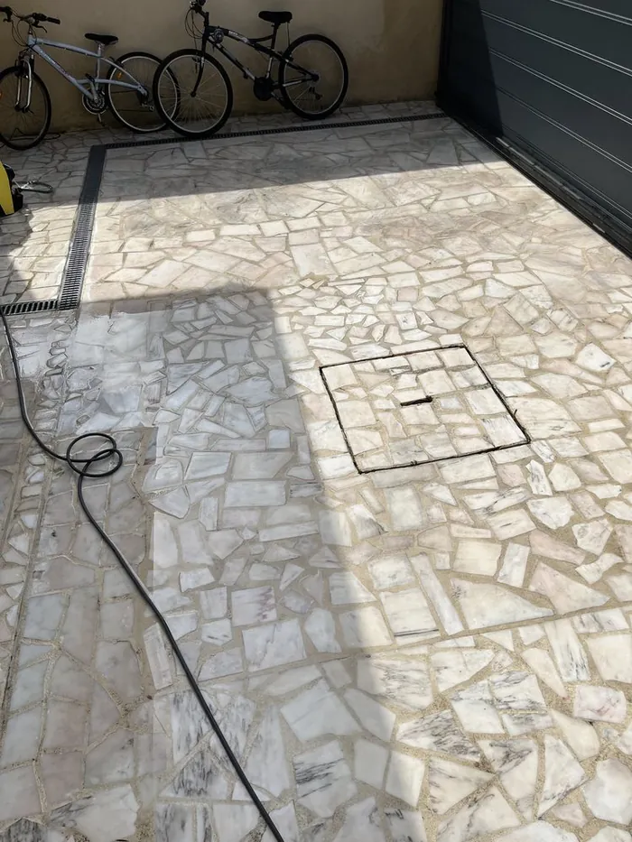
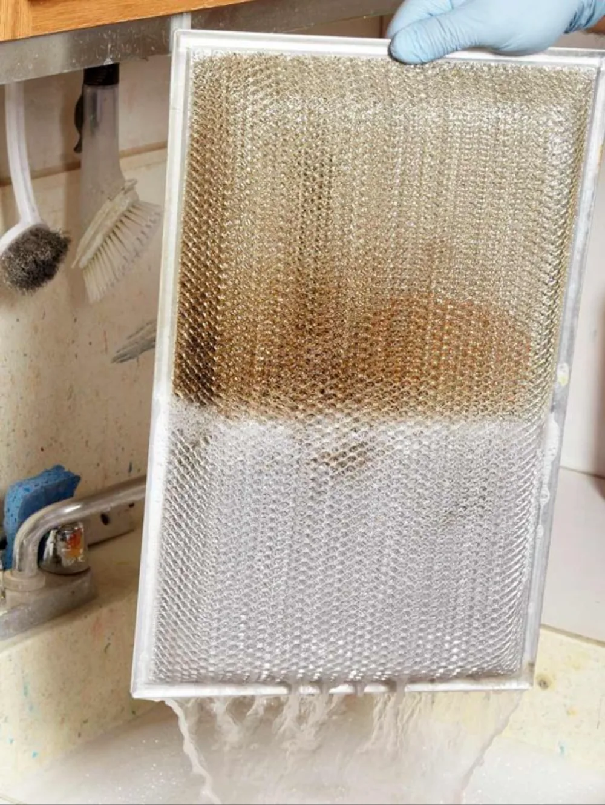
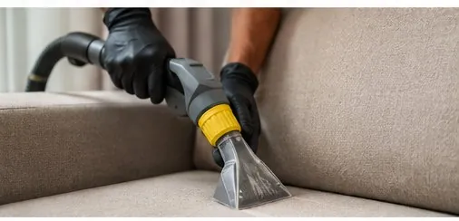
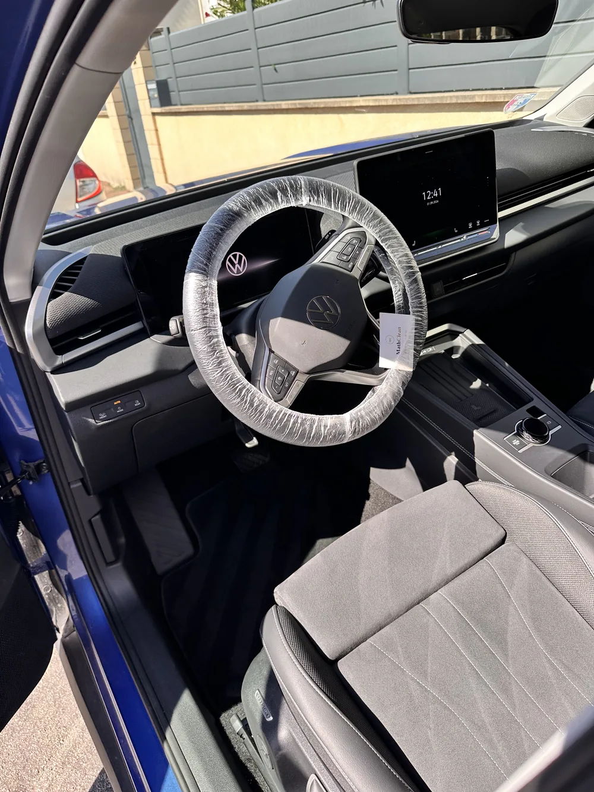
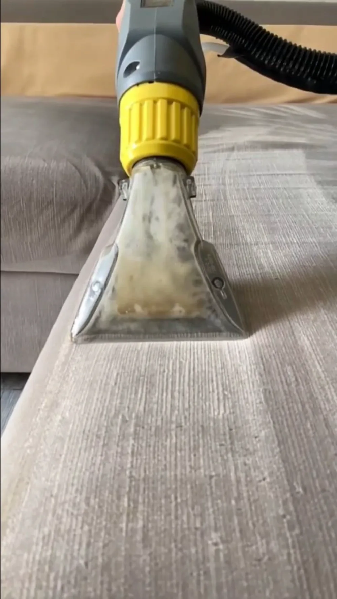
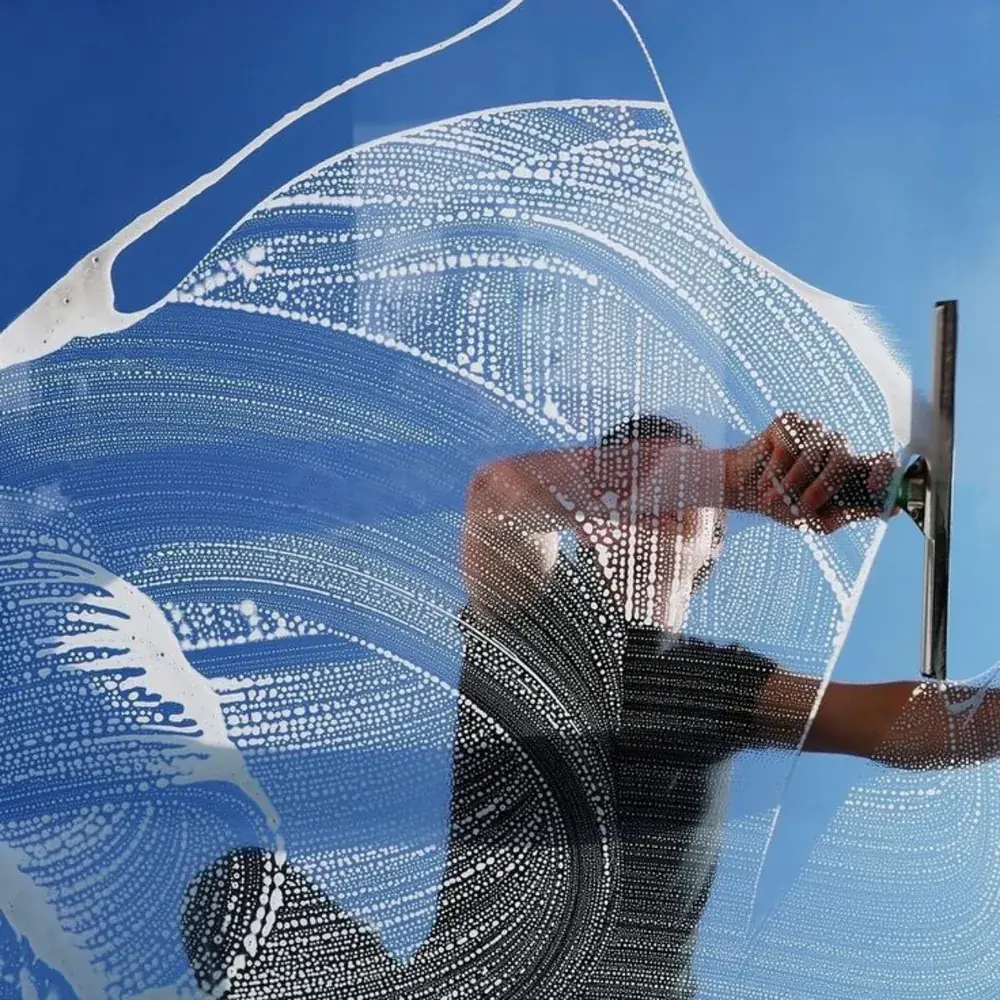

Nettoyage haute pression : terrasses, sols et façades
Terrasses, allées, cours, parkings et façades accessibles depuis le sol : la pression réglée sur le support, jamais l'inverse.
Nettoyage haute pression à Paris
Le nettoyage haute pression est la prestation où l'on fait le plus de dégâts quand on la croit simple. Ce qui décolle la salissure, ce n'est pas la pression mais le débit : la pression détache, le débit évacue. Une machine réglée trop fort sur une pierre tendre ou un bois de terrasse ne nettoie pas mieux — elle creuse la surface, et le défaut est définitif.
Nous réglons donc la pression sur le support, nous travaillons à l'hydro-brosse rotative plutôt qu'à la lance sur les grandes surfaces — c'est ce qui évite les zébrures —, et nous passons à l'eau chaude quand le dépôt est gras. Les supports que nous ne traitons pas, nous le disons avant le devis.

Ce que nous traitons
- Terrasses : dallage, pierre, carrelage, béton, bois et composite
- Allées, cours, descentes de garage et escaliers extérieurs
- Parkings et sous-sols, à l'eau chaude pour les traces d'hydrocarbures
- Quais de livraison, locaux poubelles et abords de bennes
- Murs de clôture, murets et façades accessibles depuis le sol
- Mobilier de jardin, pergolas et garde-corps
- Rejointoiement de sable des dallages après lavage, si nécessaire
Tarif : sur devis. Cette prestation se chiffre au cas par cas : nous établissons un devis gratuit et ferme après échange. Les frais de déplacement (5 € par tranche de 5 km depuis notre atelier du Blanc-Mesnil (93)) s'ajoutent et vous sont annoncés avant validation.
Nous venons entièrement équipés — machines, produits, eau et électricité. Vous n'avez ni prise ni point d'eau à fournir.
Comment nous procédons
Identification du support
Pierre naturelle, béton désactivé, grès cérame, bois, composite ou enrobé : chacun a sa pression maximale et son produit. C'est ce diagnostic qui décide du reste.
Essai sur une zone cachée
Avant de traiter la surface entière, un essai dans un angle peu visible. Il montre le résultat réel et révèle une fragilité que l'œil ne voyait pas.
Lavage à la pression adaptée
Hydro-brosse rotative sur les grandes surfaces pour un résultat régulier, lance pour les angles et les bordures. Eau chaude quand le dépôt est gras.
Rinçage et remise en état
Rinçage complet, évacuation des résidus, et rejointoiement de sable si le lavage l'a entamé. Nous ne laissons pas un dallage déchaussé.
Nettoyage haute pression : vos questions
Le nettoyage haute pression peut-il abîmer ma terrasse ?
Oui, et c'est le risque principal de cette prestation. Une pierre tendre se creuse, un bois pelucherait si on le prenait à contre-fil, un béton désactivé perd ses granulats, un enrobé perd son liant. Le dommage est irréversible. C'est pour cela que nous identifions le support et faisons un essai sur une zone cachée avant de traiter l'ensemble.
Les mousses vont-elles revenir ?
Oui. Le lavage retire ce qui est visible, pas ce qui est installé dans la porosité du support : sur une surface exposée au nord ou à l'ombre, la repousse se voit en une à deux saisons. Nous le disons plutôt que de laisser croire à un résultat durable. Les produits de traitement destinés à retarder cette repousse relèvent d'une réglementation à part, et nous n'en appliquons pas.
Traitez-vous les toitures ?
Non, dans aucun cas. C'est du travail en hauteur, qui demande des compétences et des équipements que nous n'avons pas. Et les plaques en fibrociment posées avant 1997 peuvent contenir de l'amiante : le nettoyage haute pression y est à proscrire, parce qu'il libère des fibres. Nous refusons ces chantiers sans discuter.
Nettoyage haute pression partout en Île-de-France
Paris (75) · Hauts-de-Seine (92) · Seine-Saint-Denis (93) · Val-de-Marne (94) · Essonne (91) · Yvelines (78) · Seine-et-Marne (77) · Val-d'Oise (95)
Un support couvert de lichen, repris à la lance
Un coffret de jardin envahi de lichen jaune et d'algues vertes. La bande propre apparaît au fur et à mesure du passage : aucun produit miracle, aucun montage, et c'est le même support du début à la fin.
Ce que la séquence ne montre pas, et qui décide pourtant de tout : le support a été identifié avant, et la pression réglée sur lui. Le même geste sur une pierre tendre ou sur du bois aurait creusé la surface — c'est pour cela que nous faisons un essai sur une zone cachée avant de traiter l'ensemble.
Besoin de cette prestation ?
Devis gratuit et sans engagement, réponse sous 24 h. Aucun acompte : vous réglez après l'intervention.
Nettoyage haute pression commune par commune
Distance, frais de déplacement et délai propres à chaque commune, plus ce que le terrain y change concrètement.
Nos autres prestations

sur devisDégraissage de hottes
Hotte, filtres, bac à graisse et conduits d'extraction jusqu'au ventilateur : le circuit complet, dégraissé en une intervention de nuit.
Découvrir la prestation sur devisNettoyage d'entreprise
Bureaux, commerces, salles de restaurant et parties communes, en passage quotidien, hebdomadaire ou mensuel, aux horaires qui vous arrangent.
Découvrir la prestation
sur devisNettoyage d'appartement
Grand ménage de printemps, remise en état avant un état des lieux, ou nettoyage complet entre deux locations : l'appartement entier, pièce par pièce.
Découvrir la prestation
dès 50 €Nettoyage automobile
Detailing intérieur et extérieur à domicile. Aspiration, shampoing des sièges, vapeur haute température, plastiques et vitres — votre voiture retrouve son aspect showroom.
Découvrir la prestation
dès 15 €Nettoyage textile (canapé, matelas, tapis)
Canapé, matelas, tapis, fauteuil et moquette : injection-extraction, détachage ciblé et traitement anti-acariens, directement chez vous.
Découvrir la prestation
sur devisNettoyage de vitres
Fenêtres, baies vitrées, vérandas et vitrines nettoyées à l'eau osmosée : sans minéraux, l'eau sèche sans rien déposer.
Découvrir la prestation